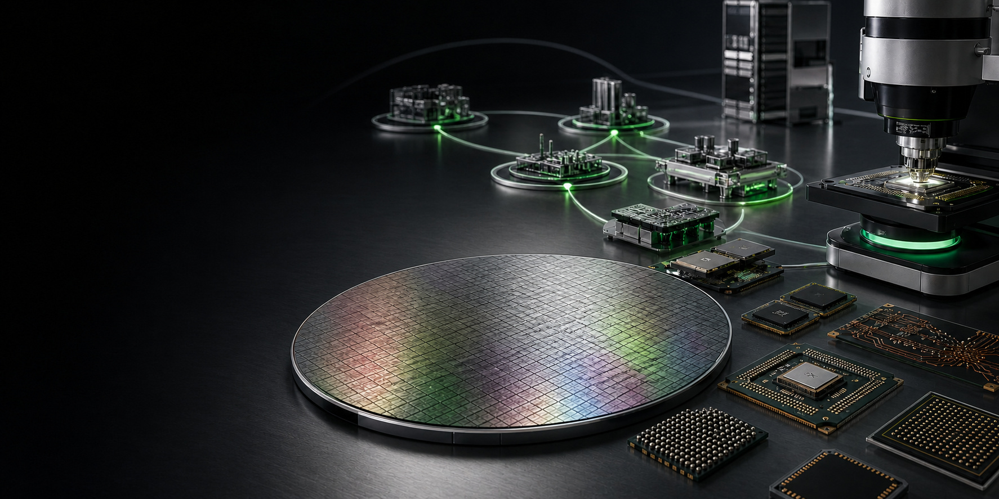
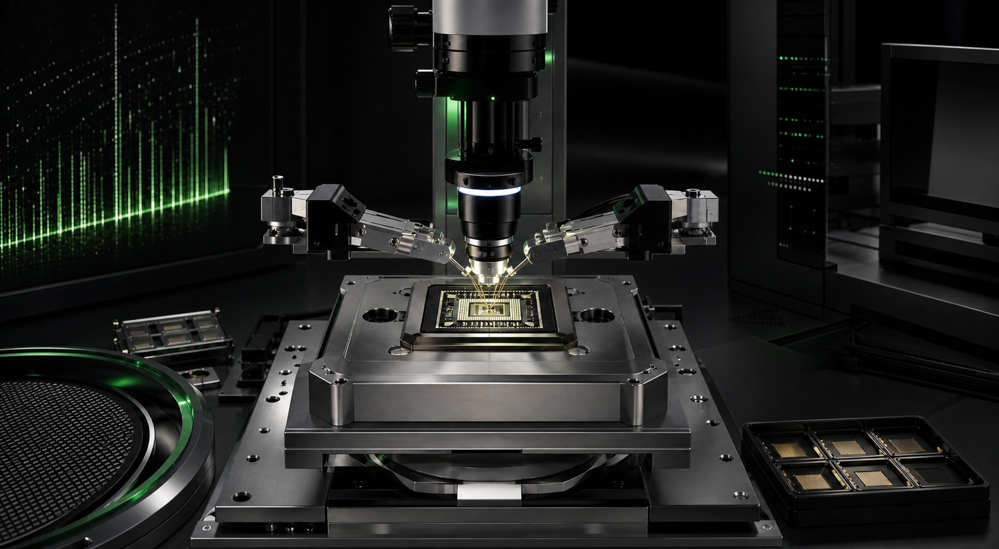

SEMICONDUCTOR SUPPLIER NETWORK
共同构建，
可信赖的芯片供应链。
HOLYCORES 寻找能够以工程透明度、稳定质量和长期协作共同推进开放计算的半导体产业伙伴。成为供应商 →
PARTNERSHIP SCOPE
从材料与 IP，
到完整计算系统。
先进计算依赖专业化分工。我们围绕技术匹配、生命周期、风险和联合验证建立供应商关系，而不是只比较单次采购价格。01晶圆制造与工艺
制造工艺、特殊工艺平台、掩模、晶圆测试及工程协同。
02封装、基板与测试
先进封装、基板、互连、散热材料、可靠性与量产测试。
03IP、EDA 与设计服务
处理器、存储、接口、安全 IP，设计工具、验证和签核服务。
04存储、连接与系统器件
内存、闪存、网络、时钟、电源、传感与系统关键元器件。
SUPPLIER EXPECTATIONS
合作始于，
清晰的共同标准。
具体要求会按器件风险、应用环境和产品阶段分级确定。以下框架用于尽早对齐双方投入。QUALITY质量能力
- 设计与制程变更管理
- 可追溯性和异常闭环
- 可靠性与失效分析能力
DELIVERY交付与韧性
- 产能、交期与生命周期透明
- 连续供货和灾难恢复计划
- 关键风险与替代路径管理
ENGINEERING联合工程
- 明确接口与技术负责人
- 样品、数据和问题快速协同
- 支持设计导入与持续优化
TRUST合规与诚信
- 遵守适用法律与贸易规则
- 知识产权和信息安全保护
- 反贿赂与利益冲突管理

QUALITY THROUGH THE LIFECYCLE质量不是一次审核，
而是持续可见的过程。
供应商质量管理从产品定义与技术选择开始，贯穿设计导入、样品验证、试产、量产、变更和停产管理。不同阶段使用不同证据，所有结论都应能追溯到明确条件。
- 准入评估能力、体系、技术路线与业务连续性
- 设计导入规格、接口、风险、样品与验证计划
- 生产准备制程能力、追溯、控制计划与放行标准
- 持续改进绩效评审、根因分析、纠正预防与经验回流
RESPONSIBLE SUPPLY CHAIN
让技术、商业与责任，
沿同一条链路传递。
我们期望合作伙伴尊重劳动者、保护环境、保障安全并诚信经营。相关要求将根据合作范围逐步纳入尽职调查、合同和绩效沟通。职业健康与安全劳动权益与平等环境与资源效率负责任矿产商业道德数据与知识产权
ENGAGEMENT PROCESS
从能力匹配，
到长期协作。
提交信息不等同于取得供应商资格。HOLYCORES 将依据实际项目需求和风险等级推进评估。01能力登记
介绍产品、技术节点、产能区域、质量体系和合作联系人。
→02初步匹配
根据产品路线、技术需求和时间窗口评估合作可能性。
→03尽职与验证
完成技术、质量、合规、安全和供应风险的分级验证。
→04导入与评审
按项目开展样品、设计导入、绩效管理和持续改进。